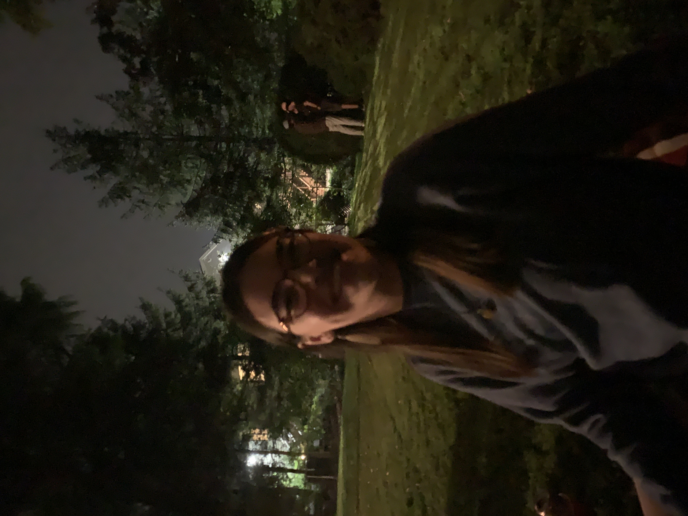

Over the summer, Grace was dating this guy that went to high school with us. We thought why not have a little kickback in Nicole's backyard and have this guy bring the most random slew of frat boys that we haven't spoken to since we were like 16. Just for laughs.
Grace's entanglement Alex brought Mason, Dylan, Trevor, and Jake. we were able to make conversation, but kept noticing that it was impossible for them to describe anything other than "so lit." What really threw us for a loop was when they had to pee instead of asking Nicole where her bathroom was they would just pee in her poor father's garden.
But then at one point Dylan did ask where the bathroom was, so did that mean he was taking a shit and we all knew it?
Then something happened that we speak about almost daily. Dylan and Mason went to pee in Nicole's father's bushes maybe 2 feet behind where Maura was sitting. I was remarking at how odd this was to begin with, but then I realized that they were peeing facing each other. This was just too odd so I had to have Maura pretend I was taking a photo of her.

Upon analysis of the photo it appears that Dylan is caressing Mason's face while peeing while facing each other. Ultimately this just takes up too much real estate in our minds.